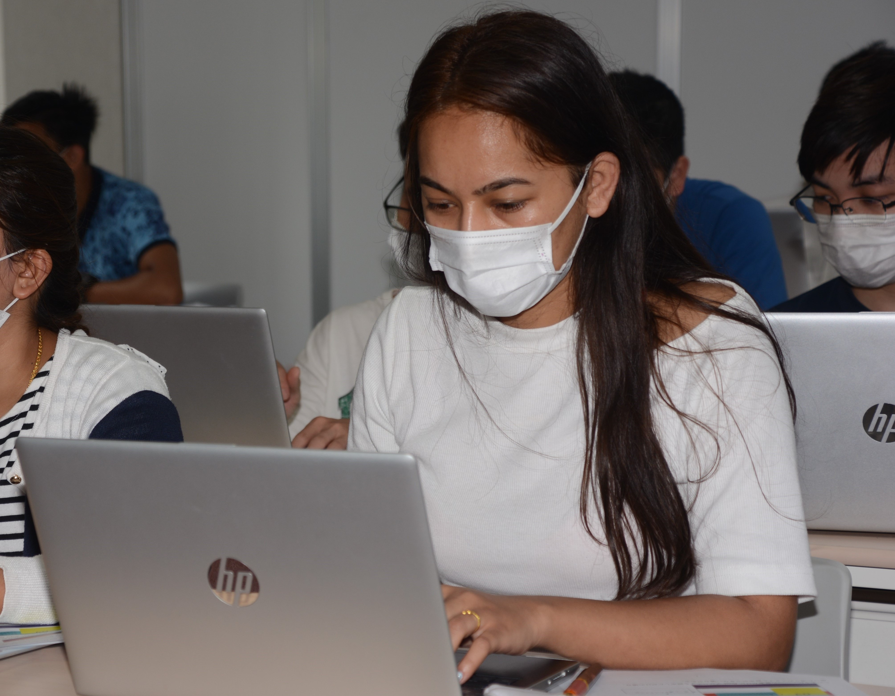
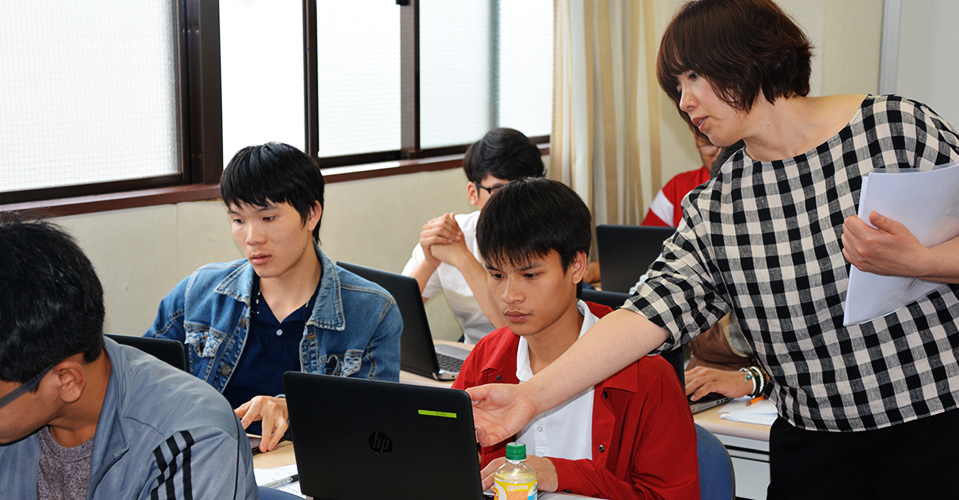
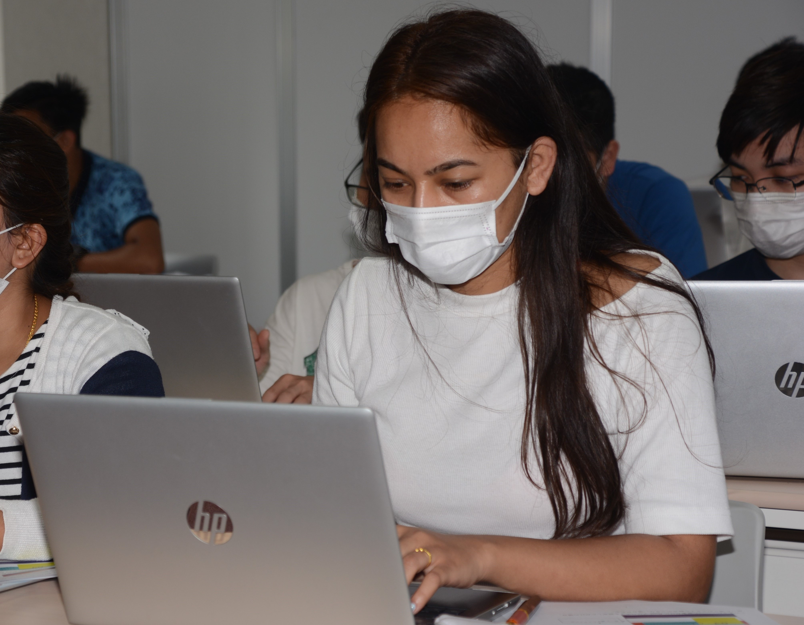
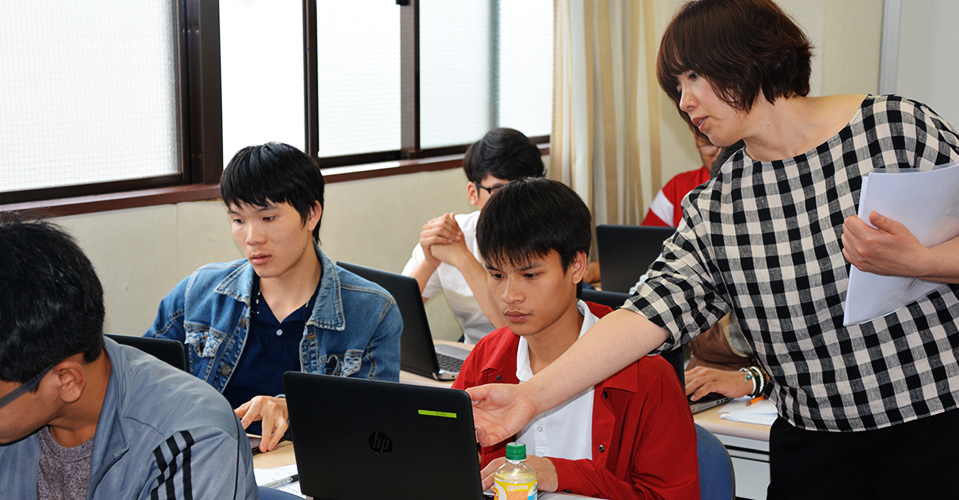

【Chỉ tuyển du học sinh có N1】
Chúng tôi mong muốn phát triển nguồn nhân lực có thể đóng vai trò tích cực như một lực lượng trực tiếp trong ngành CNTT đang phát triển từng ngày.
Tìm hiểu công nghệ lập trình tiên tiến và công nghệ phát triển hệ thống từ những điều cơ bản.
Đồng thời, sinh viên học các công nghệ ứng dụng như cơ sở dữ liệu và phát triển các kỹ sư hệ thống cao cấp.
Tại trường của chúng tôi, chúng tôi sẽ hướng dẫn bạn vượt qua Kỳ thi Kỹ sư Thông tin Cơ bản trong vòng một năm sau khi vào trường thông qua các lớp chuẩn bị chủ yếu tập trung vào việc đạt được các bằng cấp.
Các giảng viên có nhiều kinh nghiệm thực tế truyền dạy bản chất của kỹ sư hệ thống thông qua hướng dẫn thực tế tương ứng với công nghệ và xu hướng mới nhất.
| Kiến thức PC/kiến thức thông tin | Giới thiệu về công nghệ thiết kế và phát triển hệ thống | Công nghệ thiết kế mạng, bảo trì và vận hành |
| ＷＯＲＤ | ＥＸＣＥＬ | Linux(sơ cấp・trung cấp) |
| Công nghệ sản xuất và phát triển web | Kỹ năng lập trình PHP | Kỹ năng lập trình HTML |
| Công nghệ phát triển phần mềm | Công nghệ phát triển hướng đối tượng | Công nghệ phát triển phần mềm nhúng |
| ngôn ngữ lập trình Java | lập trình ngôn ngữ C | Giới thiệu về Điện và Điện tử |
| Công nghệ phát triển ứng dụng của Google | Kỹ năng lập trình VBA | Thiết kế và phân tích cơ sở dữ liệu |
| thuật toán | toán rời rạc | nghiên cứu tốt nghiệp |